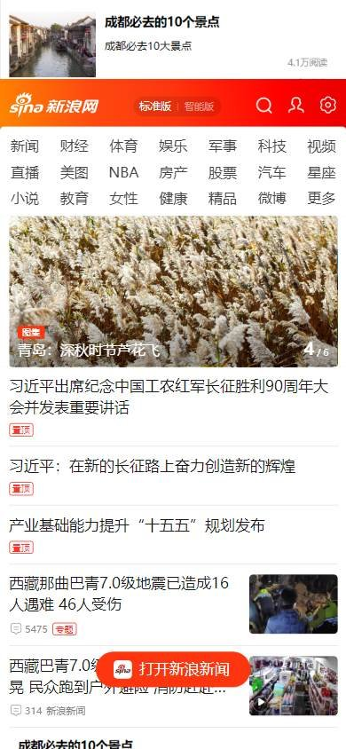
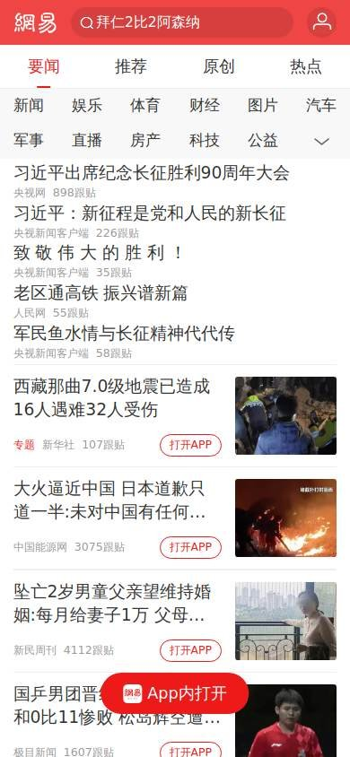
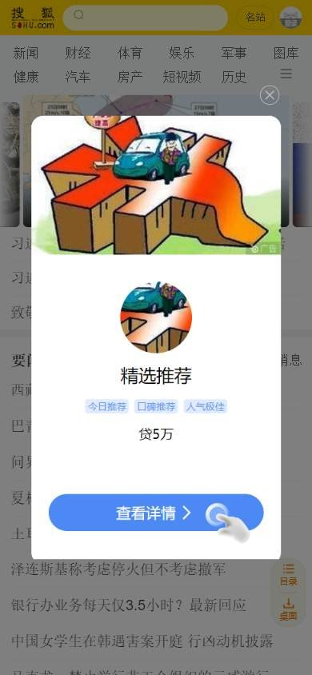

Sitio informativo o de noticias
Los seleccionados
Los tres sitios más visitados de China, según estadísticas de tráfico.
En resumen: lo que hacen los líderes
La pantalla de inicio de cada uno



Estilo visual
Colores, imágenes, tipografía y cuánta información muestran.
Tu estilo visual debería…
- Titular principal en rojo y muchos titulares de texto chico; fotos chicas.
Lo que tienen en común: Densidad muy alta, fotos chicas y titulares de texto chico; el rojo marca lo importante.
La paleta de cada uno
Medida sobre la primera pantalla. Los colores de marca salen del header; el resto muestra cuánto espacio ocupa cada color.
Así lo resuelve cada uno
Ficha comparativa
| Aspecto | Sina | NetEase (163) | Sohu |
|---|---|---|---|
| Paleta | Acotada: rojo + naranja + blanco | Acotada: rojo + negro + blanco | Acotada: amarillo + rojo + blanco |
| ImágenesIgual en todos | Fotos chicas | Fotos chicas | Fotos chicas |
| DensidadIgual en todos | Muy alta | Muy alta | Muy alta |
| TipografíaIgual en todos | Titulares chicos, el principal en rojo | Titulares chicos, el principal en rojo | Titulares chicos, el principal en rojo |
Header
La franja de arriba con el logo y los accesos.
Tu header debería…
- Logo y buscador juntos a la izquierda, en una franja baja.
Lo que tienen en común: Logo chico a la izquierda con el buscador al lado. El header ocupa poco: lo importante es la grilla de enlaces de abajo.
Así lo resuelve cada uno

Ficha comparativa
| Aspecto | Sina | NetEase (163) | Sohu |
|---|---|---|---|
| Fondo | Blanco | Blanco con franja negra arriba | Blanco |
| Logo | Rojo, a la izquierda | Rojo, a la izquierda | Bloque amarillo, a la izquierda |
| Buscador | Junto al logo, botón naranja | Junto al logo | Junto al logo, botón amarillo |
Menú y categorías
Cómo se organizan las secciones.
Tu menú y categorías debería…
- Si tu público es chino, mostrá muchas secciones a la vista en una grilla, en vez de esconderlas en un menú.
Lo que tienen en común: En vez de un menú, los tres muestran una grilla con decenas de secciones en varias filas de texto chico.
Así lo resuelve cada uno


Ficha comparativa
| Aspecto | Sina | NetEase (163) | Sohu |
|---|---|---|---|
| FormatoIgual en todos | Grilla de enlaces en varias filas | Grilla de enlaces en varias filas | Grilla de enlaces en varias filas |
| Densidad | Muy alta, decenas de secciones | Muy alta | Muy alta |
Primera pantalla
Lo primero que se ve debajo del header.
Tu primera pantalla debería…
- Titular principal en rojo y negrita, y debajo muchos titulares de texto.
- Fotos chicas acompañando, no una gran imagen.
Lo que tienen en común: No hay una foto principal grande: la portada es una columna de titulares de texto, el primero en rojo y negrita, con fotos chicas al costado.
Así lo resuelve cada uno
Ficha comparativa
| Aspecto | Sina | NetEase (163) | Sohu |
|---|---|---|---|
| Formato | Titulares en columnas + fotos chicas | Titular rojo + titulares + 3 fotos | Titulares en columnas + fotos chicas |
| Foto grandeIgual en todos | No | No | No |